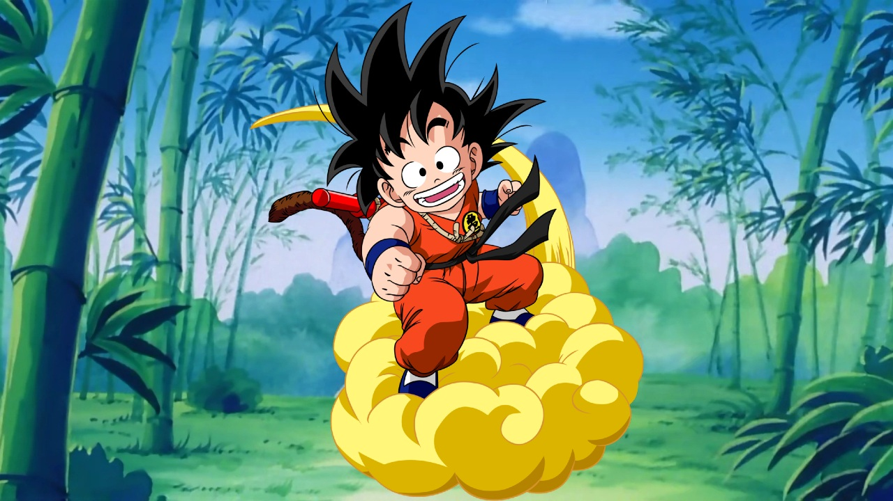
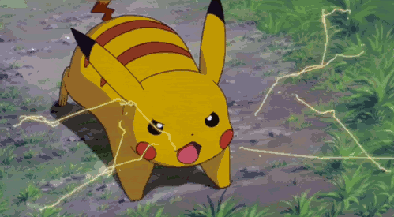

Dragon Ball y Pokémon son dos de las franquicias más exitosas en el mundo del entretenimiento. Aunque ambas han influenciado a generaciones, tienen enfoques diferentes. En esta página, compararemos sus aspectos más relevantes, como la historia, los poderes, la popularidad y más.
Dragon Ball sigue la historia de Goku, un guerrero que busca las esferas del dragón para obtener un deseo. A lo largo de la serie, Goku participa en intensos combates, se enfrenta a poderosos enemigos y protege el universo. La historia se centra en el crecimiento y la evolución de sus personajes a través de batallas épicas.
Pokémon narra la historia de Ash Ketchum, un joven que sueña con convertirse en el mejor maestro Pokémon. A lo largo de sus viajes, captura criaturas y se enfrenta a desafíos en forma de competiciones y batallas, con un enfoque en la amistad y la aventura. La historia de Pokémon está más centrada en la relación entrenador-pokémon y el crecimiento personal.

En Dragon Ball, los personajes como Goku poseen poderes sobrehumanos, que incluyen transformaciones como el Super Saiyan, habilidades como el Kamehameha y una gran resistencia. Las batallas son extremadamente intensas y se desarrollan en escenarios cósmicos con ataques devastadores.

En Pokémon, las criaturas tienen habilidades y ataques especiales según su tipo (agua, fuego, electricidad, etc.). Por ejemplo, Pikachu puede usar "Impactrueno", mientras que Charizard lanza ataques de fuego. Las batallas se basan en la estrategia, ya que cada Pokémon tiene una serie de movimientos que pueden aprovechar sus fortalezas y cubrir sus debilidades.
Dragon Ball es un fenómeno mundial dentro del mundo del anime y manga. Con más de 30 años de historia, ha dejado una huella profunda en la cultura popular, especialmente entre los fanáticos del anime y las batallas épicas. La serie ha generado múltiples películas, videojuegos y una gran base de seguidores internacionales.
Pokémon es una de las franquicias más rentables y populares de la historia. Con su expansión a videojuegos, cartas coleccionables, series de televisión y películas, Pokémon ha alcanzado una popularidad global que atrae a todas las edades, especialmente entre los niños. La saga sigue siendo una de las más influyentes, especialmente con la constante salida de nuevos juegos y eventos.
Dragon Ball y Pokémon son dos franquicias excepcionales que han dejado una marca indeleble en la cultura popular. Dragon Ball se enfoca en batallas épicas y la evolución de sus personajes, mientras que Pokémon pone énfasis en la relación entre los entrenadores y sus criaturas. Aunque sus enfoques son distintos, ambas series siguen siendo relevantes y continúan encantando a millones de fans alrededor del mundo.